韓国 2015年12月9日アップデート
※韓国公式と韓国人プレイヤーから頂いた情報を基にしています。誤訳や韓国独自仕様の可能性もありますので、予めご了承下さい。2015年12月9日 韓国アップデートの変更内容一覧
5次転生システム実装
RED STONEのかけら交換システム実装
新クエスト「協会デイリークエスト」
新クエスト「懸賞付き指名手配」
新クエスト「冒険家レポート」
「冒険団コイン商店」「特殊装備商店」実装
新課金アイテム「経験の水晶球」「成長の泉」
新課金アイテム「魔法の色鉛筆」
新課金アイテム「グローポータルスフィア」
冒険家協会バー改編
Lv750〜950の新マップ追加
パーティーリスト新機能追加
「メイド」「悪魔」「ビーストテイマー/サマナー」のPVP用新武器実装
ログインセキュリティー画面改善
冒険団2.0アップデート記念イベント
5次転生システム実装
5次転生クエストは、4次転生Lv900以上のキャラクターが受諾することができます。
クエスト完了時にステータス・スキルのボーナスポイントが500追加されます。
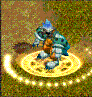
RED STONEのかけら交換システム実装
ギルドホールの古美術商ネネにて、結晶石とRED STONEのかけらを交換することができます。
必要な結晶石の個数は、顧客ランクとギルドホールレベルによって異なります。
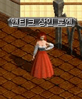
| 顧客ランク | ギルドホールレベル | 結晶石 | RED STONEのかけら |
|---|---|---|---|
| 5 | 1〜5 | 9個 | ランダムで3〜10個獲得 |
| 4 | 2〜5 | 8個 | |
| 3 | 3〜5 | 7個 | |
| 2 | 4〜5 | 6個 | |
| 1 | 5 | 5個 |
新クエスト「協会デイリークエスト」
| 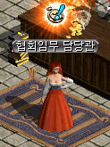 |
協会デイリークエストはLv1〜 冒険家協会ブルンネンシュティグ本部の協会任務担当官より、一日一回、 [討伐任務]か[伝達任務]のどちらか1つを選択して受諾することができます。 グローポータルスフィア（新課金アイテム）を所持している場合のみ、両方受けることができます。 |
| 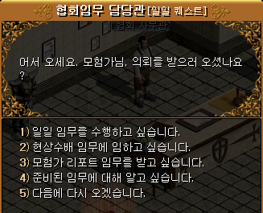 |
?協会デイリークエストを引き受けたいです。 ?懸賞付き指名手配の依頼を引き受けたいです。 ?冒険家レポートの依頼を引き受けたいです。 ?依頼について教えてください。 ?また今度きます。 |
| 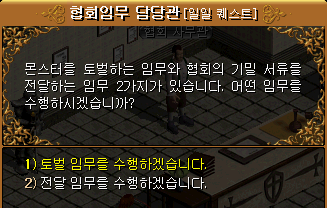 |
?協会デイリークエストを引き受けたいです。 を選択し、 ?討伐任務 ?伝達任務 を選択 |
| 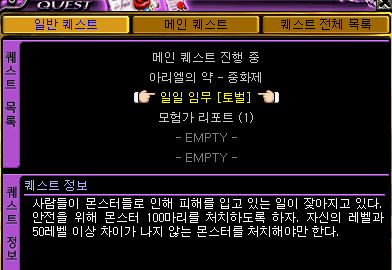 |
協会クエスト[討伐任務] 本体Lv-50以上のモンスターを100匹倒す |
| 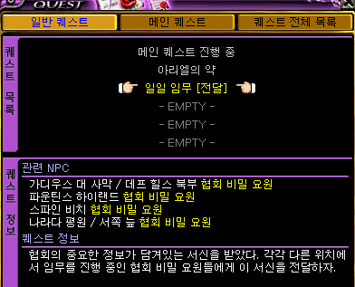 |
協会クエスト[伝達任務] 協会の書信を協会秘密要員4人に届ける ガディウス大砂漠 / デフヒルズ北側 ファウンティンス・ハイランド スパインビーチ ナラダ平原 / ウエストスワンプ |
| 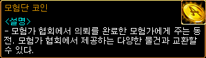 | 報酬はどちらも同じで、経験値+ 冒険団コイン1個。 （取引・銀行保管不可。破壊は可能） 経験値はLvにより、 Lv50以下は10万 Lv106で75万 Lv330で250万 など。 |
新クエスト「懸賞付き指名手配」
| 懸賞付き指名手配はLv150〜 冒険家協会ブルンネンシュティグ本部の協会任務担当官より、一日一回、 受諾することができます。 ?懸賞付き指名手配の依頼を引き受けたいです。 を選択 |
|
| 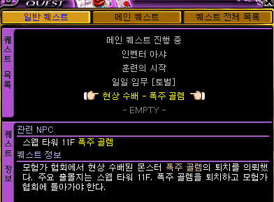 |
受諾時のLvによって対象モンスターが 異なります。 Lv301〜350では、 懸賞付き指名手配 - 暴走ゴーレム スウェブタワー １１Ｆの暴走ゴレームを倒す |
| 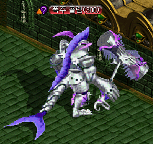 | 暴走ゴレーム（Lv300）Zin かなり硬いです。 報酬は経験値（不明）+ 冒険団コイン1個。 |
| 受諾時のLv | マップ | 対象モンスター |
|---|---|---|
| 150〜199 | 魔法傭兵の墓 Ｂ１ | 虐殺者ナッシュ |
| 200〜249 | 名も無い崩れた塔 １Ｆ | 鋼鉄のキメラ |
| 250〜299 | 小さい傭兵の墓 Ｂ１ | 左足のダディー |
| 300〜349 | スウェブタワー １１Ｆ | 暴走ゴレーム |
| 350〜399 | フォーリン望楼 地下 | 流血のファイク |
| 400〜449 | 暴かれた納骨堂 Ｂ６ | 捕食者ラフォン |
| 450〜499 | ダークエルフ王宮 ２Ｆ | 暗殺者エルオーン |
| 500〜549 | 呪いを受けたミズナの洞窟 / 宝石の部屋 | 大盗賊フランク |
| 550〜599 | 名も無き遺跡 Ｂ１ | 守護者フォリー |
| 600〜649 | ガルカス悪魔軍集結地 Ｂ１ | 猿王バット |
| 650〜699 | 時の森（2層目） | 永劫のファントム |
| 700〜 | 神秘の洞窟 Ｂ２ | 闇魔導師ラオール |
新クエスト「冒険家レポート」
| 冒険家レポートはLv1〜 冒険家協会ブルンネンシュティグ本部の協会任務担当官より、受諾することができます。 ?冒険家レポートの依頼を引き受けたいです。 を選択 |
|
| 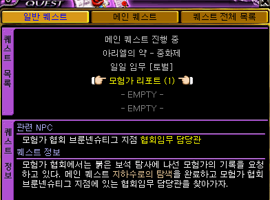 |
冒険家レポート（1） 冒険家協会では、かけら探査に出た冒険家の記録を要請している。メインクエスト地下水路への探索を完了して、冒険家協会ブルンネンシュティグ本部の協会任務担当官を訪ねよう。 経験値79万1590 冒険団コイン1個 |
 |
冒険家レポート（2） 冒険家協会では、かけら探査に出た冒険家の記録を要請している。クエスト冒険家の心得を完了して、冒険家協会ブルンネンシュティグ本部の協会任務担当官を訪ねよう。 経験値343万6180 冒険団コイン1個 |
| 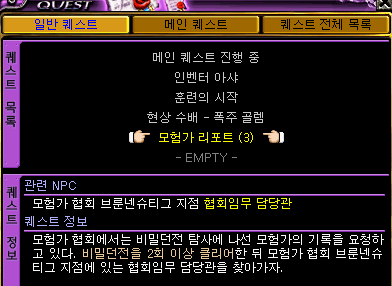 |
冒険家レポート（3） 冒険家協会では、かけら探査に出た冒険家の記録を要請している。秘密ダンジョンを2回以上クリアした後、冒険家協会ブルンネンシュティグ本部の協会任務担当官を訪ねよう。 |
| 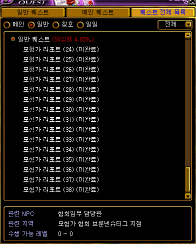 | 冒険家レポートは（1）〜（38）まであります。 （20）で経験値48億5000万など、 4次転生Lv650まで順次進行し、多くの報酬経験値を獲得することができます。 |
「冒険団コイン商店」「特殊装備商店」実装
冒険家協会ブルンネンシュティグ本部にコイン商人ペル、コイン商人オペ、特殊装備商人が配置されました。
コイン商人ペルでは冒険団コイン6個でユニークアイテムを、コイン商人オペでは冒険団コイン20個でNxユニークアイテム（錬成オプションは未開封）を交換してもらうことができます。
（取引・銀行保管・破壊・エンチャント不可。有効期限はなし。）
交換したユニーク・Nxユニークアイテムはコイン商人に売却すれば、冒険団コインを返却してもらえます。
特殊装備商人では精霊王の冠やサリーンイントルーダーなどのDXユニークアイテムを、10万Gでレンタルすることができます。
（取引・エンチャント不可。有効期限1日。要求Lv30）
グローポータルスフィア（新課金アイテム）を所持している場合は、レンタル代が1Gになります。
⇒アイテムデータに不具合が発生したため、利用停止されていましたが、12月23日のメンテナンスで
仕様変更され再開されました。（現在の日本仕様と同様）
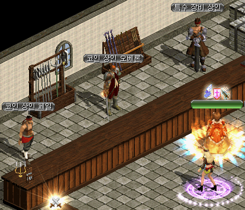
新課金アイテム「経験の水晶球」「成長の泉」
「経験の水晶球」は課金アイテムで、インベントリに所持している間に狩りで得た経験値の一定の割合を水晶球に蓄積します。
蓄積した経験値が最大累積数値に達すると「成長の泉」が生成されます。
「経験の水晶球」から生成される「成長の泉」は、取引や銀行保管が可能です。
「束縛された水晶球」からは「束縛された成長の泉」（取引不可）が生成されます。
Lv800以上のキャラクターは「成長の泉」を使用できません。
一度に所持できる「経験の水晶球」は一種類のみです。
| 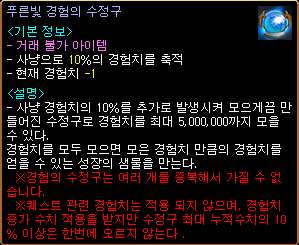 | 青色経験の水晶球 狩りでの獲得経験値を10％追加で発生させて水晶球に最大500万まで蓄積させることができる。経験値を累積最大数値まで貯めると、貯めた分の経験値を得られる成長の泉が生成される。 ※経験の水晶球は、複数重複して所持することはできない。 ※クエスト経験値には適用されず、経験値増加分は適用されるが、水晶球の最大累積数値の10％以上は一度に蓄積することができない。 |
| アイテム | 最大累積数値 | 蓄積率 | 価格 （ウォン） |
説明 | |
|---|---|---|---|---|---|
| 青色経験の水晶球 | 500万 | 10％ | 1000 | 成長の泉 （取引可能）を生成 |
|
| 赤色経験の水晶球 | 450万 | 30％ | 1500 | ||
| 黄金色経験の水晶球 | 1500万 | 30％ | 4500 | ||
| 束縛された青色経験の水晶球 | 500万 | 10％ | 400 | 束縛された成長の泉 （取引不可）を生成 |
|
| 束縛された赤色経験の水晶球 | 450万 | 30％ | 700 | ||
| 束縛された黄金色経験の水晶球 | 1500万 | 30％ | 2000 | ||
| アイテム | 経験値 | 説明 | |
|---|---|---|---|
| 成長の泉 | 青い光 500万 赤い光 450万 黄金の光 1500万 |
経験の水晶球から得られる泉。 使うと経験値が増加する。 ※Lv800以上のキャラクターは使用不可 |
|
| 束縛された成長の泉 | 青い光 500万 赤い光 450万 黄金の光 1500万 |
経験の水晶球から得られる泉。 使うと経験値が増加する。 ※Lv800以上のキャラクターは使用不可 ※取引不可 |
|
新課金アイテム「魔法の色鉛筆」
自身が作成したテキストをキャラクターの頭上に表示されることができる課金アイテム。
全角8文字、半角英数16文字まで設定可能です。
使用すると、「ニックネーム保有者」という称号を獲得し、8色の中から1色を選択できます。
称号欄を右クリックすると、作成したテキストを再修正することができます。
| 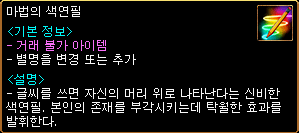 | 魔法の色鉛筆 9900ウォン |

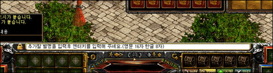
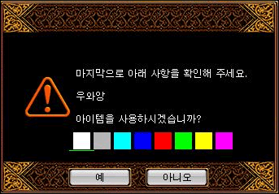
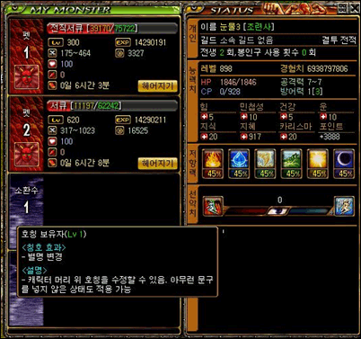
新課金アイテム「グローポータルスフィア」
「コスミック・ポータル・スフィアー」に、一日クエスト1回追加とレンタルアイテムを1Gで利用できる機能が追加されたスフィアです。
「グローポータルスフィア」を所持していない場合は、特殊装備商人でのレンタル代が10万Gかかります。
| グローポータルスフィア | 効果 |
|---|---|
| グローの力がコスミックストーンとポータルスフィアの力を吸収して、より一層強力になった宝石。 ※1キャラクターでのみ使用可能 (同一アカウントの他キャラクター間での共有不可) ※銀行保管不可、破壊不可 |
・街帰還 ・カーペット召還 ・プレミアムゾーン入場 ・場所記憶 ・獲得経験値、アイテムドロップ率上昇 ・ギルドホールレベルに関係なく各階のギルドダンジョンに1回追加で入場可能 ・神秘石のかけらやタティリス遺跡のかけらを追加で獲得 ・インフィニティ武器の強化成功確率が上昇 ・協会一日クエストを1回追加で進行可能 ・冒険家協会[特殊装備商人]エーゲの装備を1Gでレンタルできる |
| アイテム | 有効期間 | 価格 | |
|---|---|---|---|
| グローポータルスフィア[7日] | 7日 | 3900ウォン | |
| グローポータルスフィア[14日] | 14日 | 8200ウォン | |
| グローポータルスフィア | 30日 | 17600ウォン | |
冒険家協会バー改編
冒険家協会バーにギルド戦申込区域が追加されました。
ブルンネンシュティグギルド戦 申込事務室と同様に、ギルド申し込みNPCや悪徳商人がいます。
また、低Lvプレイヤーも気軽にギルド戦に参加できるようアイテムレンタルNPCが配置されました。
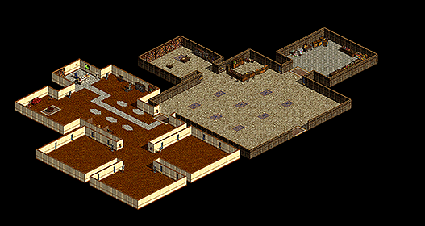
| 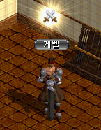 |
アイテムレンタルNPCにて、 |
| 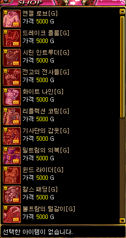 |
ギルド戦用の武器や防具を、 5000Gでレンタルすることができます。 |
| 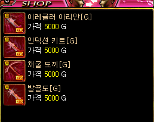 |
レンタルできるアイテムの種類・性能は、 決戦サーバーのアイテムと同様です。 （ただし要求Lv100） |
| 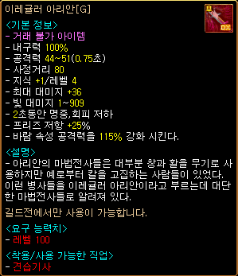 | 有効期限はありませんが、 ギルド戦以外のマップに移動すると消滅します。 |
Lv750〜950の新マップ追加
Lv750〜950の新マップが新たに8個追加されました。
ブラックファイヤー郊外 Lv750〜800
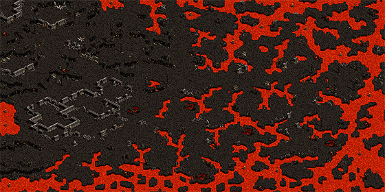
深淵の湖郊外 Lv750〜800
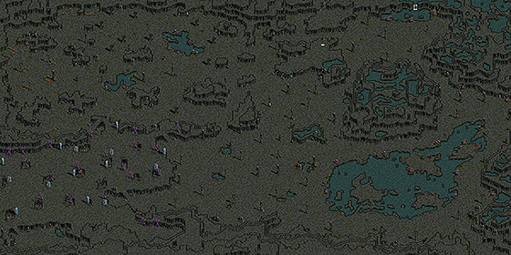
ブラックファイヤー隠されたダンジョン中心地 Lv800〜875
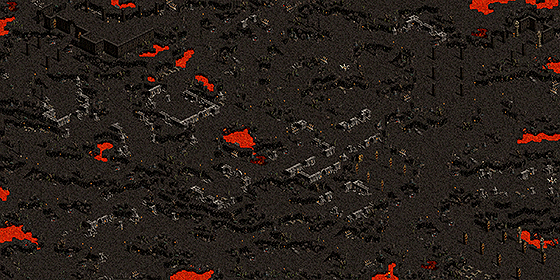
ブラックファイヤー洞窟 Lv800〜875
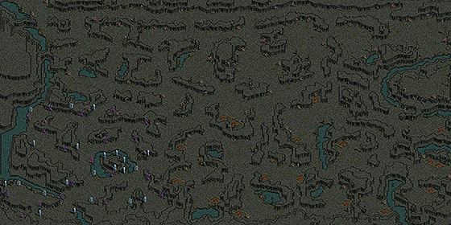
荒れた荒野の要塞 Lv850〜925
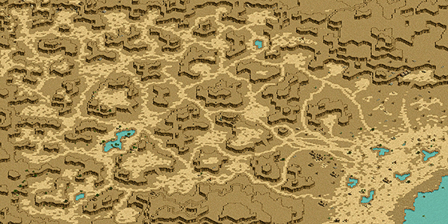
荒れた荒野の要塞入口 Lv850〜925
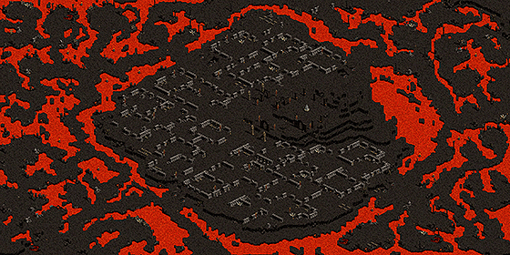
ブラックファイヤー隠されたダンジョン Lv925〜950

古代悪魔研究所 Lv925〜950
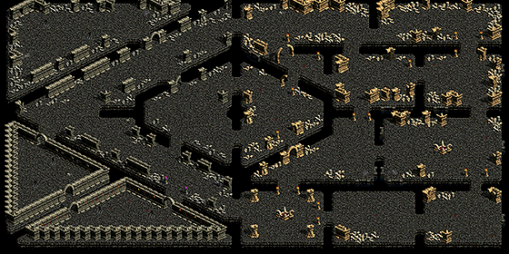
荒れた荒野の要塞入口（Lv850〜925）にて、Lv888での狩り経験値↓
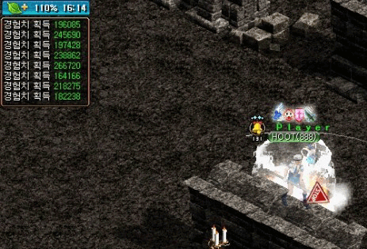
パーティーリスト新機能追加
1人でもパーティー募集ができる機能が追加され、パーティーリストの表示も変更されました。
ただし、1人では募集リストを出せるだけでパーティーを組んでいるわけではないので、ポタ出しなどはできません。
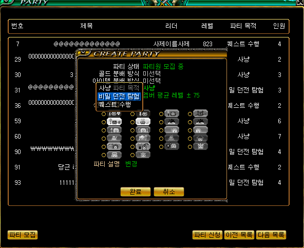
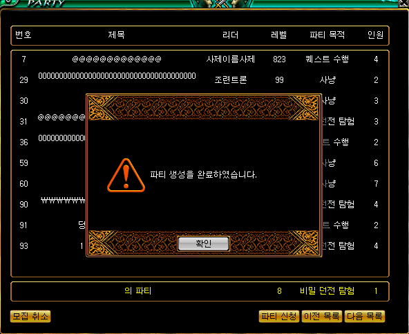
「メイド」「悪魔」「ビーストテイマー/サマナー」のPVP用新武器実装
| 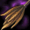 ブレイブブルーム | ブレイブブルーム[Nx] |
|---|---|
| <基本情報> 攻撃力 80~90 (1.00秒) 射程距離 110 決定打 +1％ ダメージ +180％ 攻撃速度 +25％ 敏捷 +80 水ダメージ 120〜180 コールド 6Frame 闇ダメージ 66〜66 呪い 5秒 人間型キャラクターに追加で200％のダメージを与える。 錬成 可能 |
<基本情報> 攻撃力 80~90 (1.00秒) 射程距離 110 決定打 +1％ ダメージ +195％ 攻撃速度 +30％ 敏捷 +180 水ダメージ 420〜680 コールド 6Frame 闇ダメージ 366〜466 呪い 5秒 人間型キャラクターに追加で200％のダメージを与える。 <錬成 オプション 情報> アイテム着用レベル -110 ダメージ +50％ 最終ダメージ +10％ ダブルクリティカルダメージ 10％ 増加 |
| <要求能力値> レベル 521 力 176 敏捷 250 <着用可能な職業> メイド |
|
| ブレイブインテリジェンステール | ブレイブインテリジェンステール[Nx] |
| <基本情報> 攻撃力 5~10 (1.20秒) 攻撃速度 +30％ ノックアウト攻撃 +50％ 命中率 +50％ 移動速度 +30％ スキルレベル +3 最大CP +100％ 錬成 可能 |
<基本情報> 攻撃力 5~10 (1.20秒) 攻撃速度 +40％ ノックアウト攻撃 +50％ 命中率 +100％ 移動速度 +40％ スキルレベル +5 最大CP +100％ <錬成 オプション 情報> アイテム着用レベル -110 敏捷 +100 攻撃速度 +10％ 移動速度 +10％ |
| <要求能力値> レベル 521 健康 300 <着用可能な職業> 悪魔 |
|
| ブレイブインテリジェンスファゴット | ブレイブインテリジェンスファゴット[Nx] |
| <基本情報> 攻撃力 5~10 (1.20秒) ペット・召喚獣の全ての状態異常抵抗 +60％ ペット・召喚獣の攻撃速度 +25％ ペット・召喚獣の最大HP +25％ 召喚獣死亡時再召喚待機時間なし 最大CP +100％ 錬成 可能 |
<基本情報> 攻撃力 5~10 (1.20秒) ペット・召喚獣の全ての状態異常抵抗 +70％ ペット・召喚獣の攻撃速度 +30％ ペット・召喚獣の最大HP +30％ 召喚獣死亡時再召喚待機時間なし 最大CP +100％ <錬成 オプション 情報> アイテム着用レベル -110 ペット・召喚獣の魔法攻撃力 +20％ ペット・召喚獣の攻撃速度 +20％ ペット・召喚獣最大体力 +100％ |
| <要求能力値> レベル 521 知恵 300 <着用可能な職業> ビーストテイマー サマナー |
|
ログインセキュリティー画面改善
ログイン時のセキュリティー番号入力画面が大きく見やすくなりました。
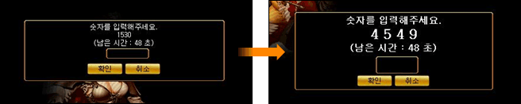
冒険団2.0アップデート記念イベント
5次！5次！5次！転生！！ 2015年12月9日〜 12月30日
5次転生クエストを完了したキャラクターのサーバー別上位5人に、黄金色経験の水晶球 10個をプレゼントします。
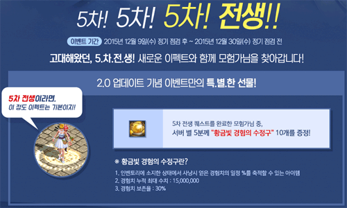
新規クエストへGo！ 2015年12月9日〜12月30日
12日間休まず新規クエストを完了して冒険団コインを24個以上取得したキャラクターに、グローポータルスフィア[1日] 1個をプレゼントします。
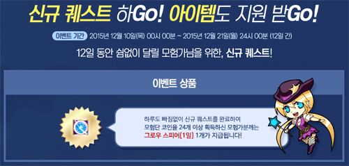
ギルド・オブ・サポーターズ
募集期間 2015年12月1日〜12月7日
当選発表 2015年12月8日
活動期間 2015年12月9日〜12月23日
ギルドサポーターへの志望動機や熱意を1:1問合せより申し込んだギルドの中から、各サーバーで1つのギルドを選抜します。
サポーターに選抜されたギルドには、ギルドマークエフェクトが追加されます。
また、サポーターズポイント12点を達成すると、ポータルパワーキット[1日]をプレゼント。
サポーターズポイントで1位になると20万ウォン相当の文化商品券もプレゼントされます。
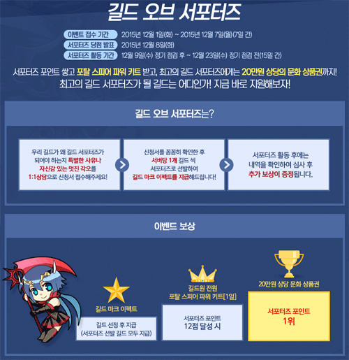
GM壺愛してる〜！ 2015年12月9日〜 12月30日
月曜日 プランデル
火曜日 ナクリエマ
水曜日 コドーム
木曜日 タメルドゥ
金曜日 全サーバー
土曜日 全サーバー
日曜日 全サーバー
パーティーラッシュイベント 19時〜21時
奇妙な紫苑の壺イベント 21時〜21時30分
中央プラトン街道 / ブルンネンシュティグ入口付近の決闘会場にて開催されます。
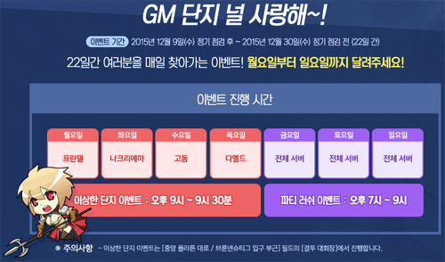
新プレミアムアイテム最高！ 2015年12月9日〜2016年1月6日
当選発表 2016年1月6日
商品支給 2016年1月13日
新課金アイテムを1個以上購入したプレイヤーの中から抽選で、1名に神秘のふいご[S]、19名に熟したパッションベリーをプレゼントします。
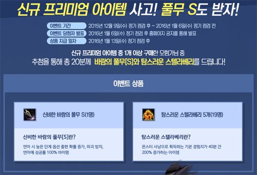